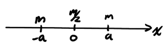

Center of Mass
Table of Contents
1. Center of Mass
The center of mass is the single point of a system whose trajectory is described by Newton's 2nd law. If there is no external mass applied on the system, the center of mass will remain in the same position.
1.1. Collection of Point Masses
The center of mass for a collection of point masses can be found by:
\begin{align} \boxed{\vec{r}_{\text{CM}} = \frac{\sum m_i \vec{r}_i}{\sum m_i}} \end{align}Example: Center of mass for point masses
Consider three point masses, each of mass \(m\), at \((0, 0)\), \((a, 0)\), and \((0, a)\):
We can find the coordinate of the center of mass by considering each component separately:
\begin{align} x_{\text{CM}} &= \frac{m(0) + m(a) + m(0)}{3m} = \frac{a}{3} \notag \\ y_{\text{CM}} &= \frac{m(0) + m(a) + m(0)}{3m} = \frac{a}{3} \notag \end{align}Thus,
\begin{align} \boxed{\vec{r}_{\text{CM}} = \frac{a}{3}\hat{x} + \frac{a}{3}\hat{y}} \notag \end{align}1.2. Continuous Mass Distribution
The center of mass when given a continuous mass distribution can be found by:
\begin{align} \boxed{\vec{r}_{\text{CM}} = \frac{\int \text{d}m \: \vec{r}}{M}} \end{align}where \(M\) is the total mass.
Example: Center of mass of dumbbell
Consider a dumbbell like so:

We can consider each elementary shape individually: two spheres and a rod. We can find the center of mass for each of them, and thus the problem becomes:

Finally:
\begin{align} x_{\text{CM}} &= \frac{m(a) + \frac{m}{2}(0) + m(a)}{2m + \frac{m}{2}} \notag \\ &= 0 \notag \end{align}